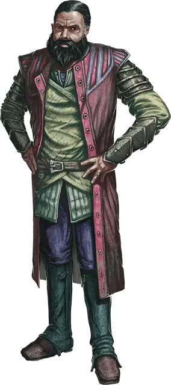

Босс Август
Boss Augustus
Средний Монстр, нейтральный, именной НИП

Класс Доспеха 13
Хиты 150 (20к8 + 60)
Скорость 30 футов (40 в форме волка или гибрида)
| мод | спас | ||
|---|---|---|---|
| СИЛ | 18 | +4 | +8 |
| ЛОВ | 16 | +3 | +7 |
| ТЕЛ | 17 | +3 | +3 |
| мод | спас | ||
|---|---|---|---|
| ИНТ | 14 | +2 | +2 |
| МДР | 15 | +2 | +2 |
| ХАР | 12 | +1 | +1 |
Навыки Восприятие +10, Ловкость рук +7, Скрытность +7
Чувства пассивное Восприятие 20
Языки Общий, Воровской жаргон (не может говорить в форме волка)
Опасность 9 (5000 опыта)
Бонус мастерства +4
Особенности
Регенерация. Август восстанавливает 10 хитов в начале своего хода. Если он получает урон посеребрённым оружием, эта особенность не действует в начале его следующего хода. Август умирает только если начинает свой ход с 0 хитов и не может регенерировать.
Особое снаряжение. Август орудует Длинным мечом +2.
Действия
Мультиатака. Август совершает любую комбинацию из двух атак Укусом, Когтями или Магическим длинным мечом.
Укус (только в облике Волка или Гибрида). . Рукопашная атака оружием: +8 к попаданию, досягаемость 5 футов, одна цель. Попадание: 26 (5к8 + 4) колющего урона. Если цель — гуманоид, она должна преуспеть в спасброске Телосложения Сл 15, иначе станет проклятой ликантропией вервольфа. Будучи проклятым таким образом цель сохраняет своё мировоззрение, языки и снаряжение, но в остальном использует блок характеристик вервольфа [werewolf], исключая действия, требующие снаряжения, которого у цели нет. Любой ночью, когда на небе полная луна, цель становится ПМ под контролем Мастера и остается им до конца ночи. Заклинание снятие проклятия [remove curse] или подобная магия снимает это проклятие.
Когти (только в облике Волка или Гибрида). Рукопашная атака оружием: +8 к попаданию, досягаемость 5 футов, одна цель. Попадание: 21 (5к6 + 4) колющего урона. Если целью является существо, оно должно преуспеть в спасброске Силы Сл 16, иначе упадёт ничком.
Магический длинный меч (только в облике Гуманоида или Гибрида). Рукопашная атака оружием: +10 к попаданию, досягаемость 5 футов, одна цель. Попадание: 28 (4к10 + 6) рубящего урона.
Бонусные действия
Смена формы. Август превращается в волка или гибрид волка и гуманоида или же принять свой истинный облик гуманоида. Вся его статистика, за исключением скорости, остаётся одинаковой во всех обликах. Всё несомое и носимое им снаряжение не превращается. Он принимает свой истинный облик, если умирает.
Хитрое действие. Август может совершить действие Рывок, Отход или Засада.
Описание
Август - неуклюжий человек-вервольф, немногословный. Он делит руководство гильдией с боссом Делюром и обладает талантом планировать ограбления. Члены гильдии считают его жестоким, но справедливым лидером. Некоторые проницательные члены гильдии, такие как Катра Биттервинд, заметили, что в последнее время он стал более замкнутым, а когда появляется, то ведет себя беспокойно.
Август - урождённый ликантроп, рожденный от родителей-вервольфов [werewolf]. Его родители были убиты охотниками на монстров, когда он был маленьким, и большую часть своей жизни он путешествовал из города в город, сбегая всякий раз, когда горожане обнаруживали его истинную натуру.
Делюр и Пирит приняли Августа так, как он никогда раньше не испытывал. Когда они втроем создали гильдию лунных охотников, Август наслаждался своей новой преступной жизнью. Но со временем его страсть угасла. Богатства, которые они собрали, теперь ничего для него не значат. Насилие раздражает его, и он больше не сопереживает фантазиям Делура о мести. Вместо этого Август втайне жаждет покончить со своим проклятием и интегрироваться в общество.
Только заклинание исполнение желаний [wish] может снять проклятие Августа. Он приказал Вейнворт, ночной карге [night hag], найти любого, у кого есть доступ к этому заклинанию, и планирует предложить все, что в его силах, в обмен на снятие его проклятия. А если торг не срабатывает, всегда остается шантаж.